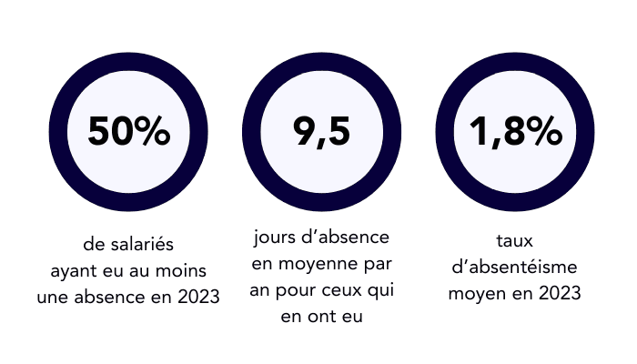

Statistiques de l'entreprise
Découvrez un aperçu des principaux indicateurs financiers du studio, illustrant sa croissance continue et sa rentabilité au fil des années.
Info
Chiffre d'affaire et revenu net
Croissance du chiffre d'affaires d'Asobo Studio
Entre 2015 et 2023, Asobo Studio a connu une croissance continue de son chiffre d'affaires,
passant
d'environ 8 millions d'euros à plus de 28 millions d'euros. Cette progression est le reflet du
succès de ses créations originales, telles que A Plague Tale: Innocence, ainsi que de ses
collaborations avec de grands éditeurs internationaux comme Microsoft et Focus Home Interactive.
L'innovation technologique, combinée à une stratégie éditoriale bien maîtrisée, a permis au
studio
de s'imposer comme un acteur clé du marché des jeux vidéo, tout en diversifiant ses sources de
revenus.
Stabilité et hausse progressive du revenu net
Le revenu net d'Asobo Studio a également connu une augmentation régulière entre 2015 et 2023,
bien
qu'à un rythme plus modéré que le chiffre d'affaires. En 2023, le revenu net atteint près de 6
millions d'euros, démontrant une gestion financière solide et une rentabilité croissante. Cette
performance reflète la capacité du studio à contrôler ses coûts de production tout en continuant
d'investir dans le développement de nouveaux projets. Les fluctuations mineures observées au
cours
de certaines années montrent l'adaptabilité du studio face aux défis économiques tout en
assurant
une stabilité à long terme.

Statistiques des effectifs
En 2018, Asobo Studio comptait environ ... employés. Avec l'essor de projets comme Microsoft Flight
Simulator, les effectifs ont rapidement augmenté. En 2021, l’entreprise comptait ... collaborateurs.
En
2022, ce nombre est passé à X employés, avec des équipes réparties entre les départements suivants :
développement (..), design (..), marketing (..) et ressources humaines (..). Cette augmentation
s'explique par la diversification des activités, notamment le développement de nouvelles
technologies et
jeux en réalité virtuelle
Emissions de Carbone
Depuis 2021, Asobo Studio a mis en place plusieurs initiatives pour réduire ses émissions de CO2. Grâce
à une utilisation accrue de serveurs alimentés par des énergies renouvelables et à l’optimisation des
infrastructures, l'entreprise a réduit son empreinte carbone de X % en 2021. En 2022, les émissions de
CO2 ont encore baissé, atteignant X tonnes. En 2023, Asobo Studio s'est fixé pour objectif d’atteindre
la neutralité carbone d’ici 2025, en investissant davantage dans les technologies écologiques et en
encourageant le télétravail pour limiter les déplacements quotidiens des employés